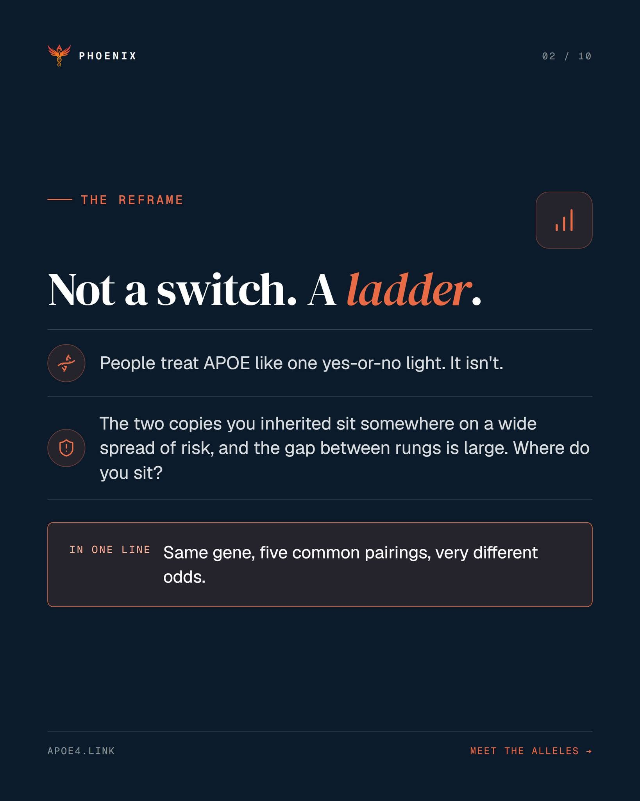
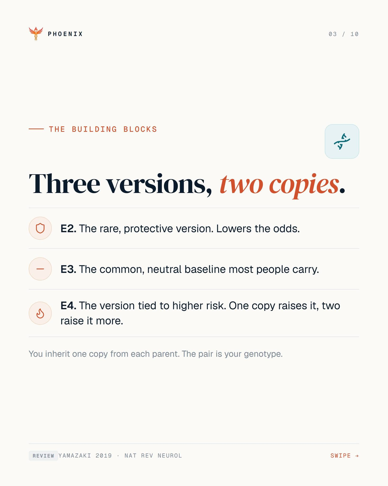
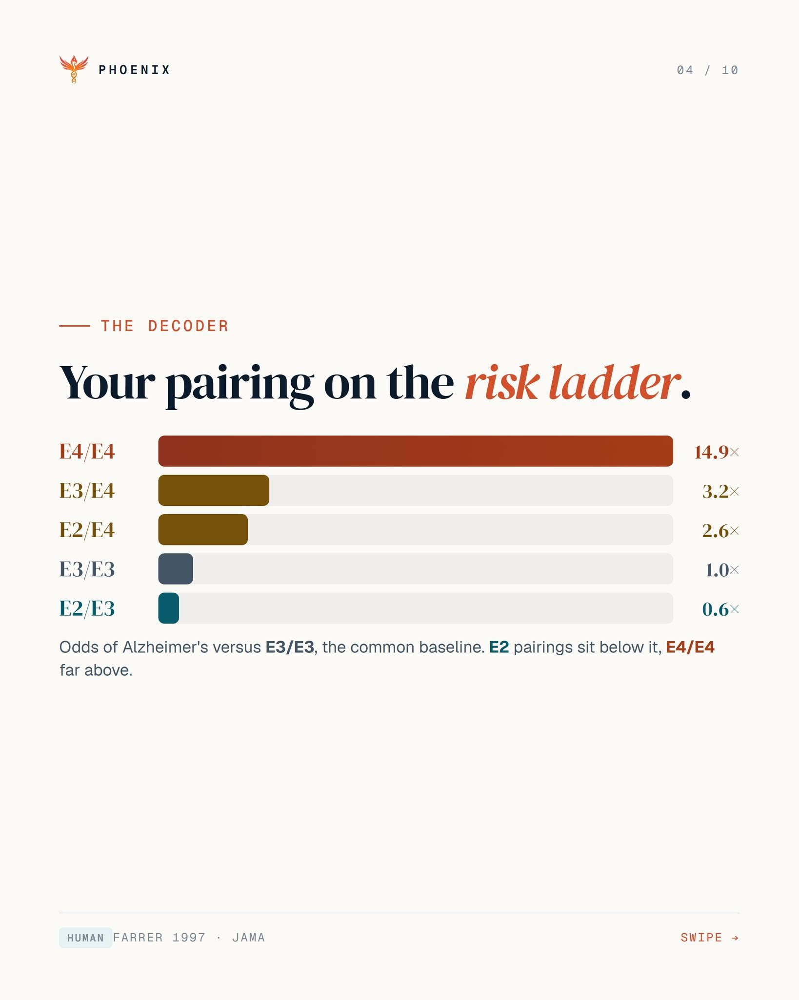
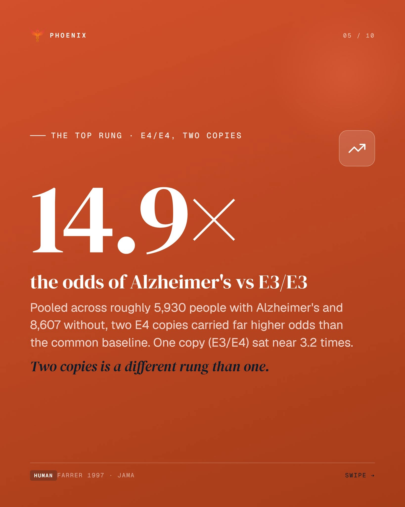

AI summary & key facts
Louis shares an explainer on APOE genotypes and Alzheimer's risk. Relative to E3/E3, E2/E3 is about 0.6x, E2/E4 about 2.6x, E3/E4 about 3.2x and E4/E4 about 14.9x, from Farrer 1997. These are population odds, not personal forecasts, and sleep, exercise, lipids, blood sugar and blood pressure remain the levers.
- E2/E3 about 0.6x, E2/E4 about 2.6x, E3/E4 about 3.2x, E4/E4 about 14.9x vs E3/E3
- Observational odds ratios, not a diagnosis
- Modifiable levers: sleep, exercise, lipids, blood sugar, blood pressure
A nice explanation of the APOE genotype, and how it relates to your risk for Alzheimer’s.
#apoe4HD #alzheimersHD
If you've found your APOE genotype in your raw DNA and felt unsure what it means, this is for you.
APOE isn't a simple yes-or-no switch. It's more like a ladder.
There are three versions of the gene: E2 (rare and protective), E3 (the common, neutral baseline), and E4 (tied to higher risk). You inherit two copies, one from each parent, and that pair is your genotype.
Compared to the common E3/E3 baseline, the odds of Alzheimer's looked very different by pairing (Farrer 1997, JAMA): E2/E3 around 0.6x, E2/E4 around 2.6x, E3/E4 around 3.2x, and E4/E4 around 14.9x.
Here's the part that matters most.
This is relative risk across thousands of people, not your personal forecast. A higher rung is a higher starting line, not a sentence. Plenty of E4/E4 carriers never develop dementia, and plenty of non-carriers do.
Whatever rung you sit on, the levers are the same: sleep, exercise, lipids, blood sugar, blood pressure. Knowing your pairing just tells you how early and how hard to pull them.
This is education, not medical advice. These are observational odds ratios, not a diagnosis, so please talk to your own clinician or a genetic counselor.
I made a free APOE4 Genetic Testing & Family Guide for carriers. Happy to share if it helps, just say the word.
Free Genetic Testing & Family Guide: apoe4.link/genotype?utm_source=facebook




